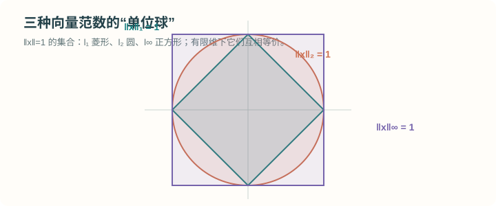
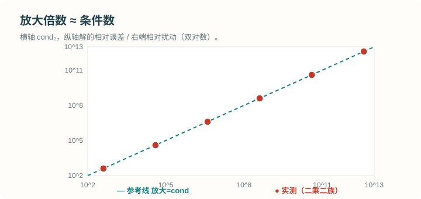

CHAPTER 17 · NUMERICAL ANALYSIS
范数与条件数：量化“问题有多难”
第 02 章提到过条件数，但把它当作一个工具来用需要先有“大小”的度量。本章先建立向量范数与矩阵范数，再用谱半径连接迭代收敛，最后用条件数把“问题本身有病”与“算法不稳定”严格分开。
01 · 问题本身有多难
同一段代码、同一个算法，换一组输入就可能差出好几个数量级。这不是代码的错，而是问题本身的敏感度不同。对线性方程组 Ax=b，决定敏感度的核心量就是条件数 cond(A)=‖A‖·‖A⁻¹‖。
这里必须区分两个概念（第 02 章已埋下伏笔）：
- 条件数（问题）：只由矩阵
A决定，与你用什么算法无关。高条件数意味着不管算法多好，输入的小扰动都会被放大。 - 稳定性（算法）：描述算法是否会额外放大误差。像带选主元的 LU 是向后稳定的：它求出的是一个“邻近问题”的精确解。
两者合起来给出前向误差的界：前向相对误差 ≲ cond(A) × 向后相对误差。所以向后稳定的算法仍可能给出不准的解——当 cond(A) 很大时，这是问题的固有限制，不是算法的缺陷。本章要把这套语言（范数）搭起来，然后给出严格的扰动界。
02 · 向量范数
范数把向量映为实数，满足三条公理：非负性（‖x‖≥0，取零仅当 x=0）、齐次性（‖αx‖=|α|‖x‖）、三角不等式（‖x+y‖≤‖x‖+‖y‖）。最常用的是一族 l_p 范数：
| 范数 | 公式 | 直观含义 |
|---|---|---|
| ‖x‖₁ | Σ|xᵢ| | 分量绝对值之和（Manhattan） |
| ‖x‖₂ | √(Σ|xᵢ|²) | 几何长度（Euclidean） |
| ‖x‖∞ | max|xᵢ| | 最大分量绝对值（Chebyshev） |
以 x=(3,−4,5) 为例：‖x‖₁=12、‖x‖₂=√50≈7.07、‖x‖∞=5。三种范数给出不同的“大小”，但都合法。有限维空间中它们互相等价：存在常数使 c₁‖x‖ₐ≤‖x‖_b≤c₂‖x‖ₐ。因此收敛性结论不依赖范数选择，但具体收敛速度的估计会变。

‖x‖=1 的集合）：l₁ 是菱形，l₂ 是圆，l∞ 是正方形。它们互相包含，正对应范数的等价性。03 · 矩阵范数与 Frobenius 范数
最有用的一类矩阵范数是诱导（算子）范数，定义为矩阵作为线性算子的最大拉伸倍数：
| 诱导范数 | 公式 | 计算 |
|---|---|---|
| ‖A‖₁ | maxⱼ Σᵢ|aᵢⱼ| | 最大列绝对值和 |
| ‖A‖∞ | maxᵢ Σⱼ|aᵢⱼ| | 最大行绝对值和 |
| ‖A‖₂ | σ₁（最大奇异值） | SVD 的最大奇异值 |
还有一个重要但不是诱导范数的范数——Frobenius 范数：
Frobenius 范数相当于“把矩阵展平成向量后取 l₂ 范数”，计算方便且具有酉不变性：‖UAV‖_F=‖A‖_F（U,V 为酉矩阵）。但它不对应任何向量范数的诱导算子范数，因此 ‖A‖₂≤‖A‖_F≤√n‖A‖₂ 这类关系需要单独推导，不能与诱导范数的性质混用。
04 · 谱半径：迭代的渐近控制者
谱半径是特征值模的最大值：
它与范数的关系决定了迭代法的行为：
| 性质 | 含义 |
|---|---|
| ρ(A) ≤ ‖A‖ | 谱半径不超过任何诱导范数 |
| ρ(A) = ‖A‖₂（A 正规时） | 正规矩阵的谱半径等于谱范数 |
| lim ‖Aᵏ‖^{1/k} = ρ(A) | Gelfand 公式：谱半径控制迭代渐近行为 |
| ρ(A) < 1 ⇔ Aᵏ → 0 | 迭代收敛的充要条件 |
下一章的 Jacobi、Gauss–Seidel、SOR 迭代，收敛速度都由迭代矩阵的谱半径支配：ρ 越接近 1 收敛越慢，越接近 0 收敛越快。这也是预处理的目的——设法把谱半径压低。
05 · 条件数与扰动放大
对非奇异矩阵 A，条件数定义为
若右端项有扰动 δb、解相应变为 x+δx，则 A(x+δx)=b+δb，推导可得
由此得到一条实用经验：求解大约会丢失 log₁₀(cond(A)) 位十进制有效数字（教学经验式）。对对称正定矩阵，cond₂(A)=λmax/λmin。注意条件数依赖所选的范数：同一个矩阵在不同范数下条件数不同，但“是否病态”的结论基本一致。
| cond 量级 | 评估 | 典型来源 |
|---|---|---|
| 1 ~ 10 | 良态 | 正交矩阵、单位矩阵 |
| 10² ~ 10⁴ | 中等病态 | 低阶 Hilbert、一般拟合 |
| 10⁶ ~ 10¹⁰ | 严重病态 | 长序列协方差、离散化病态 |
| 10¹² ~ 10¹⁶ | 近乎奇异 | 高次 Vandermonde、反问题 |

[[1,1],[1,1+ε]]，固定右端相对扰动 10⁻⁶）中，实测的解相对误差放大倍数（红点）恰好落在 放大 = cond₂ 参考线上。条件数确实是放大的控制量。（数值为双精度教学示意。）06 · 实验与失败边界
先验证范数的定义与等价关系，再用一族二乘二矩阵验证扰动界 (17.6)，看放大倍数是否真的接近条件数。
import math
x = [3.0, -4.0, 5.0]
assert sum(abs(v) for v in x) == 12 # ‖x‖₁
assert abs(math.sqrt(sum(v*v for v in x)) - math.sqrt(50)) < 1e-12 # ‖x‖₂
assert max(abs(v) for v in x) == 5 # ‖x‖∞
n1 = sum(abs(v) for v in x); n2 = math.sqrt(sum(v*v for v in x))
assert n2 <= n1 <= math.sqrt(3) * n2 # 范数等价
def cond2_sym(A): # 2x2 对称矩阵的 cond₂
tr = A[0][0] + A[1][1]
dt = A[0][0]*A[1][1] - A[0][1]**2
disc = math.sqrt(tr*tr - 4*dt)
return (tr + disc) / (tr - disc)
eps = 1e-6
A = [[1.0, 1.0], [1.0, 1.0 + eps]]
c = cond2_sym(A)
b = [A[i][0] + A[i][1] for i in range(2)] # 对应精确解 x=(1,1)
delta = 1e-6
nb = math.sqrt(b[0]**2 + b[1]**2)
pert = [delta*nb/math.sqrt(2), -delta*nb/math.sqrt(2)]
det = A[0][0]*A[1][1] - A[0][1]*A[1][0]
bn = [b[0] + pert[0], b[1] + pert[1]]
xn = [(A[1][1]*bn[0] - A[0][1]*bn[1]) / det,
(-A[1][0]*bn[0] + A[0][0]*bn[1]) / det]
rel_err = math.sqrt((xn[0]-1)**2 + (xn[1]-1)**2) / math.sqrt(2)
rel_rhs = math.sqrt(pert[0]**2 + pert[1]**2) / nb
assert rel_err <= 1.001 * c * rel_rhs # 扰动界成立（留 0.1% 舍入余量）
assert rel_err / rel_rhs > 0.99 * c # 放大确实接近条件数
print(c, rel_err / rel_rhs)失败边界。条件数依赖所选范数（cond₁≠cond₂≠cond∞）；对非常病态的矩阵，A⁻¹ 本身不可靠，因此“算出来的条件数”也可能不准。高条件数意味着问题本身难解，正确做法是改变问题（正则化、重新参数化、增加观测）而不是继续换算法。残差 ‖Ax−b‖ 很小并不代表解准确——高条件数下两者可能相差很多。
原始资料与延伸阅读
本章将文献结论与本文独立构造的数值示例严格区分；阈值与图示为教学说明。
- NumPy · numpy.linalg.cond：常用的条件数计算与范数选择。
- Nicholas J. Higham, Accuracy and Stability of Numerical Algorithms。SIAM 第二版，2002；范数、条件数与后向/前向误差的关系。
- E. Anderson et al., LAPACK Users' Guide。SIAM，第三版，1999；条件数估计器的使用。